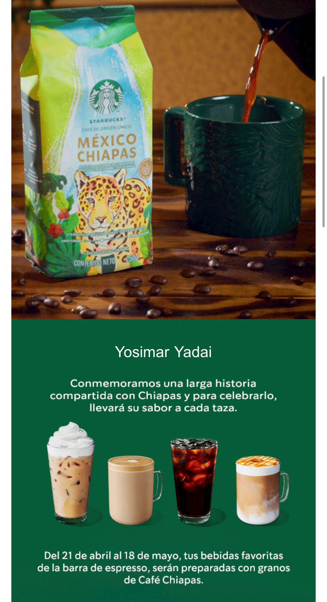

Starbucks México, operado por Alsea, da inicio del 21 de abril al 18 de mayo, nueva rutina donde los baristas preguntarán a cada cliente que ordene y lanzó una iniciativa que transforma la manera en la que los clientes disfrutan sus bebidas dentro de tienda —con el planeta en mente—.
A partir del 21 de abril, los baristas preguntarán a cada cliente si su bebida será para llevar o para disfrutar en tienda. Aquellos que elijan quedarse podrán saborear sus bebidas en tazas de cerámica o vasos de vidrio, y sus alimentos serán servidos en platos de cerámica o tablas. Este simple cambio convierte cada visita a Starbucks en una elección consciente, que contribuye a una experiencia más sustentable y reflexiva.
Con la iniciativa “Cada taza cuenta” Starbucks invita a los clientes a tomarse un momento para disfrutar verdaderamente sus bebidas elaborada con dedicación y pasión por los partners de delantal verde, en un ambiente acogedor. Los vasos y platos reutilizables no solo elevarán la Experiencia Starbucks, sino que también reflejan el compromiso continuo de la marca con la sustentabilidad y el consumo consciente.
Starbucks invita a sus clientes a ser parte del cambio, demostrando que pequeñas decisiones pueden generar grandes transformaciones. La iniciativa se implementará por fases, comenzando en 366 tiendas de Ciudad de México, Estado de México e Hidalgo y se extenderá paulatinamente a las distintas regiones de México para concluir 2025 con esta práctica en casi 900 tiendas del mercado mexicano[1].
Este cambio forma parte de las estrategias clave de la compañía que respaldan su compromiso ambiental de dejar al planeta mejor de lo que lo encontró.
Un compromiso que crece en todo México
Tan solo en 2024, Starbucks sirvió más de 19,000 bebidas en tazas reutilizables y 176,000 alimentos en platos, en 97 tiendas de la Ciudad de México. Con la expansión de esta iniciativa en 2025, se espera superar ampliamente esta cifra.
Desde 2021, Starbucks México ofrece un descuento de$8 pesos por bebida cuando el cliente utiliza su propio vaso reutilizable para llevar. Gracias a esta medida, se han servido más de 12.6 millones de bebidas en recipientes reutilizables, y solo en 2024, se evitó el uso de más de 5 millones de vasos desechables.
“Cada taza cuenta” es una de las iniciativas clave de Starbucks en su camino hacia una operación más sustentable. Esta se complementa con el Plan de Manejo de Residuos, implementado desde febrero de 2024 en la CDMX, que promueve la correcta separación de residuos orgánicos, inorgánicos y compostables.
Asimismo, Starbucks ha implementado el uso de popotes biodegradables y tapas especiales para algunas bebidas frías, con el fin de reducir el uso de estos artículos de un solo uso.
Día Mundial de la Tierra: una decisión que deja huella
Como una forma de incentivar el uso de recipientes sostenibles en bebidas para llevar, y en conmemoración del Día Mundial de la Tierra, Starbucks México regalará nuevamente vasos reutilizables especialmente diseñados, que celebran al planeta y su rica diversidad.
Por segundo año consecutivo, esta iniciativa refuerza el compromiso de Starbucks México con la sustentabilidad, demostrando que “Cada taza cuenta” es más que un programa: es un compromiso compartido entre clientes y partners (empleados) para cuidar del planeta. Es un recordatorio de que cada decisión cuenta y cada taza puede dejar una huella positiva.